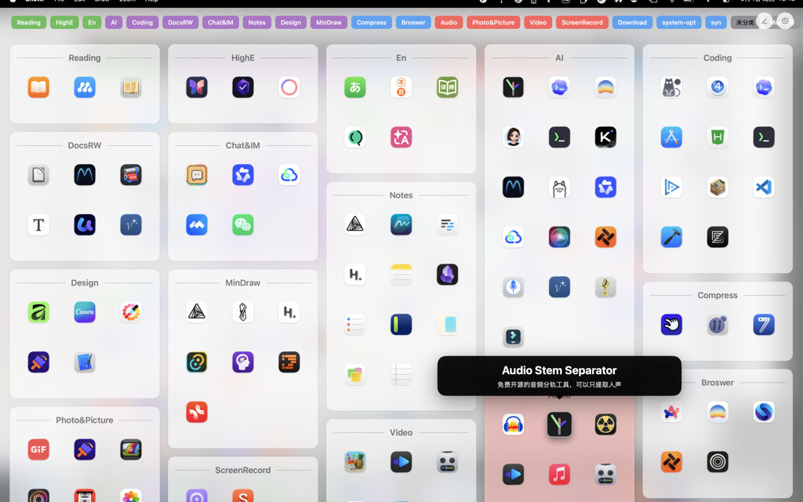
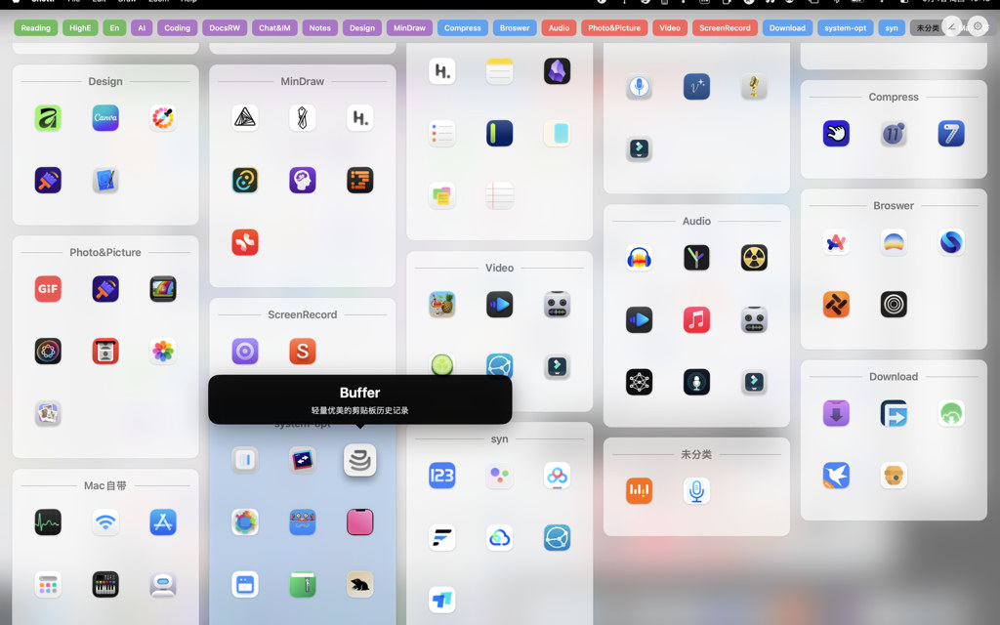

App Grid
彩色标签 + 可滚动图标网格，一眼浏览大量应用

给每个 App 写备忘
悬停或编辑用途说明，Quick Search 可搜应用名、标签与备忘。Launchpad 很难做到这一点。
为什么不只是 Launchpad？
| Launchpad | TagLauncher | |
|---|---|---|
| 浏览 | 分页翻屏，要找图标得记住在第几页 | 可滚动的应用网格，连续浏览 |
| 归类 | 主要靠文件夹，一个 App 通常只能进一个文件夹 | 多标签：同一 App 可同时属于「设计」「办公」等 |
| 备忘 | 难以为单个 App 记录用途说明 | 应用用途备忘，Quick Search 可搜索 |
| 备份 | 布局难导出、迁移、恢复 | 设置 → 数据：导出 / 导入 JSON |
核心功能
App Grid
全局快捷键打开全屏友好的应用网格，支持多显示器与全屏 Space。
Quick Search
搜索应用名、标签与备忘；网格内按 Space 或 Fn+Space 唤起。
标签体系
自定义颜色与排序；拖拽图标到标签名即可归类；批量编辑模式。
五种列表样式
平铺、无色/彩色容器、无色/彩色网格；可调图标与标签字号。
Smart Start
可选智能建议，帮助新安装应用快速归入标签。
本地优先
偏好与布局存于本机；扫描已安装应用建立索引；无分析/广告 SDK。
快速开始
- 从 Mac App Store 安装 TagLauncher（上架后）。
- 按 Option+Shift+Space 打开应用网格。
- 在网格中按 Space 打开 Quick Search。
- 在设置中调整标签位置、图标大小，或导出布局备份。
多语言图文帮助：GitHub Releases 帮助 PDF（29 种语言）。